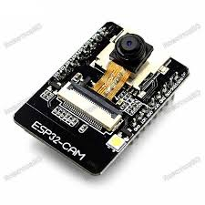
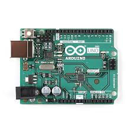

The ESP32Cam board with a camera and Arduino Uno are important components of your project. They allow you to capture and process visual data, enabling monitoring and control in the baby hazardation situation.
Here are some images showcasing the components and their functionality:

ESP32Cam Board

Arduino Uno
The "Baby Hazardous Situation Locket" is a cutting-edge device designed to ensure the safety of infants by alerting parents or guardians to potential dangers. This innovative product combines advanced technology with practical functionality to provide peace of mind to caregivers.The "Baby Hazardous Situation Locket" offers a comprehensive solution for ensuring the safety and well-being of infants, providing caregivers with invaluable peace of mind knowing that their baby is protected from potential dangers at all times.